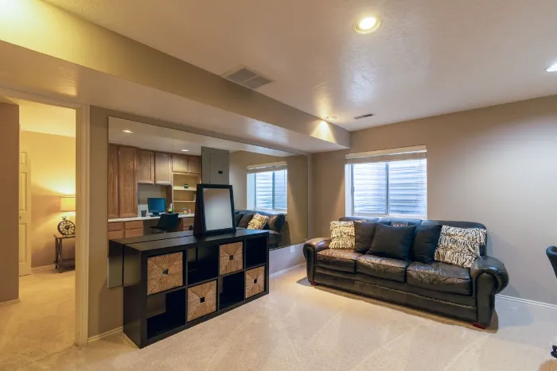

Moisture and drainage
A beautiful rec room built over an unresolved moisture problem becomes an expensive repair. Diagnose first.
 Reno Rise
Reno Rise
Basement & Legal Suite Planning
Home Services Basement Renovations Legal Secondary Suites Basement Finishing Underpinning Waterproofing Egress Windows Separate Entrances Soundproofing Basement Flooring Guides Service Areas About Contact Get MatchedUnderstand the scope, the permits and the questions to ask, then connect with qualified local professionals for your basement renovation.
Reno Rise is an independent enquiry and matching service, not a contractor.
Reno Rise helps Toronto homeowners plan basement renovations and legal secondary suites and connect with independent local renovation professionals.
Share your goals, your basement and your timeline using the enquiry form.
We look at what you have shared to understand the scope and what still needs to be confirmed.
Reno Rise matches your project with the contractor best suited to the work, and they take it from there.
A good project starts with the condition of the space, not the finishes. Get those answers early and the rest gets calmer.
A beautiful rec room built over an unresolved moisture problem becomes an expensive repair. Diagnose first.
Measure before you plan. If height is short, options include a bench footing or underpinning.
Bedrooms need a safe way out. Egress windows and entrances shape the layout.
Panel capacity, older wiring and drain locations decide what rooms are practical.
Structural, plumbing, heating and second-unit work need permits in Toronto. Plan for them early.
Insulation for below-grade walls, drywall, flooring and lighting come last, once the shell is sound.
Most basement projects fall into one of three broad scopes. These are not price tiers, and every house is different.
A dry, tall-enough basement that mainly needs walls, flooring, lighting and paint. See basement finishing, and how to choose a floor for a concrete slab.
A bedroom, bathroom or laundry area, which usually brings plumbing, electrical and egress considerations.
A separate dwelling with its own kitchen and bathroom. See the legal secondary suite guide.
Reno Rise does not publish basement price ranges, because a figure without a site visit and a defined scope can mislead. The cost to finish a basement depends on:
Our guide to basement renovation cost in Toronto explains how to compare itemized quotes.
If you have been searching for basement contractors in Toronto, or basement renovation contractors near you, here is the direction. Reno Rise does not perform renovations or vet contractors on your behalf, so do the checking yourself. It is worth it.
Toronto Building lists structural or material changes, new windows or doors, heating or plumbing changes, underpinning, a new basement entrance and adding a second dwelling unit as work that needs a permit (see the City permit page). Finishing that involves none of those may not. Confirm your project before you start.
If your basement is already dry and tall enough and needs paint, flooring and lighting, a full renovation is more than the space requires: basement finishing may be the better starting point. If there is active water entry, fix that first.
Reno Rise is focused on Toronto homes. Enquiries from elsewhere in the Greater Toronto Area are welcome too.
“We needed underpinning done before finishing the basement and most contractors wouldn’t even quote it properly. Reno Rise walked us through the whole process.”
“Amazing work and an outstanding crew. Very professional, energetic, and a pleasure to work with from start to finish. They communicate openly throughout the entire project, show up reliably, and get the job done right.”
Ideas for how a finished basement can look. Stock photos from Pexels, shown for inspiration only. They are not Reno Rise projects, and Reno Rise does not perform renovation work.



It depends on the work. Toronto Building lists structural or material changes, new windows or doors, heating or plumbing changes, underpinning, a new entrance and a second unit as needing a permit. Confirm your specific project.
There is no single number. Scope drives everything: moisture work, ceiling height, bathrooms, electrical, windows and finishes. Reno Rise does not publish price ranges it cannot verify. Get itemized quotes from more than one professional.
Only if ceiling height cannot be made workable another way. Underpinning is structural work that needs engineering and a permit, so have the height measured first.
It depends on scope, moisture or structural work, permit review and contractor availability. Ask each professional for a written schedule and what could change it.
Reno Rise reviews your project details and matches your project with the contractor best suited to the work. Before work starts, you should still confirm credentials, insurance and references yourself.
No. Reno Rise is an independent project-enquiry and contractor-matching service. Estimates, contracts, warranties, permits and construction are handled by the contractor Reno Rise matches you with.
Last reviewed September 2026. General planning information; confirm requirements for your property with Toronto Building and qualified professionals.
Tell us about your basement and your goals. Reno Rise reviews the details and matches your project with the contractor best suited to the work.
Tell us about your basement. Reno Rise reviews your project details and connects you with an appropriate independent professional.